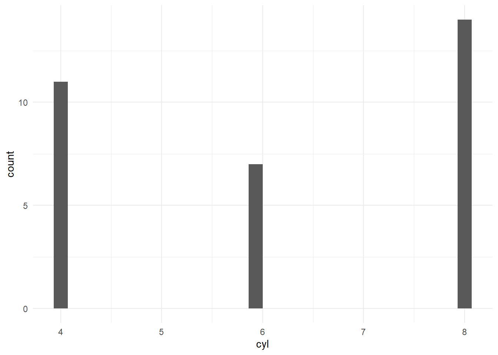
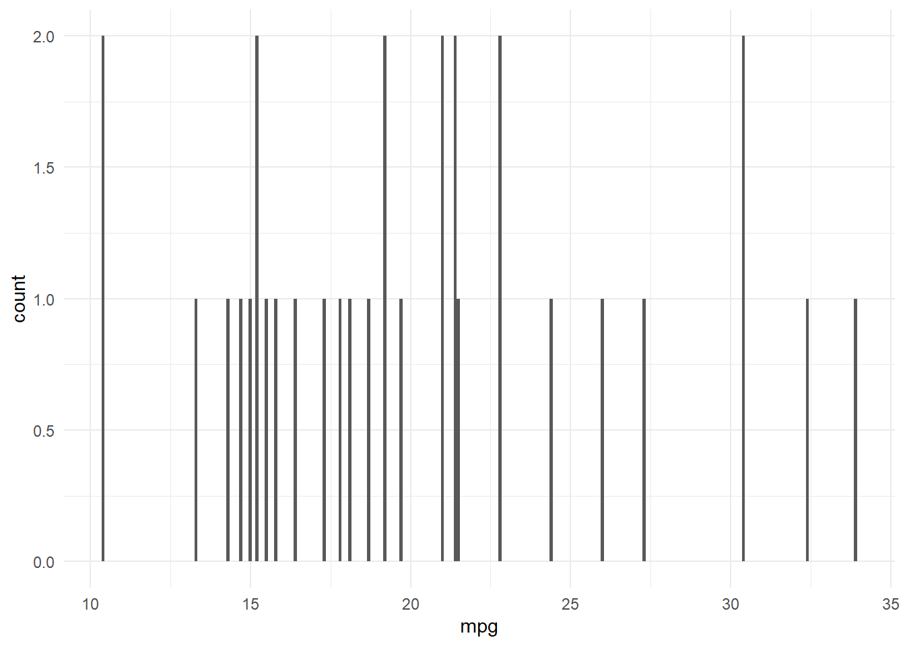
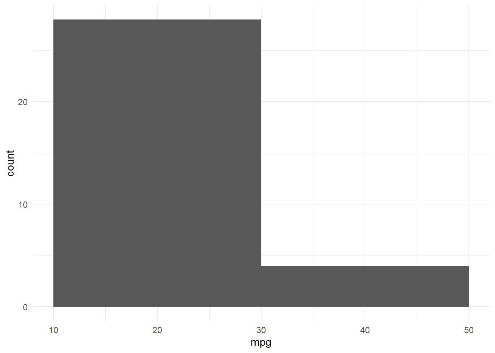
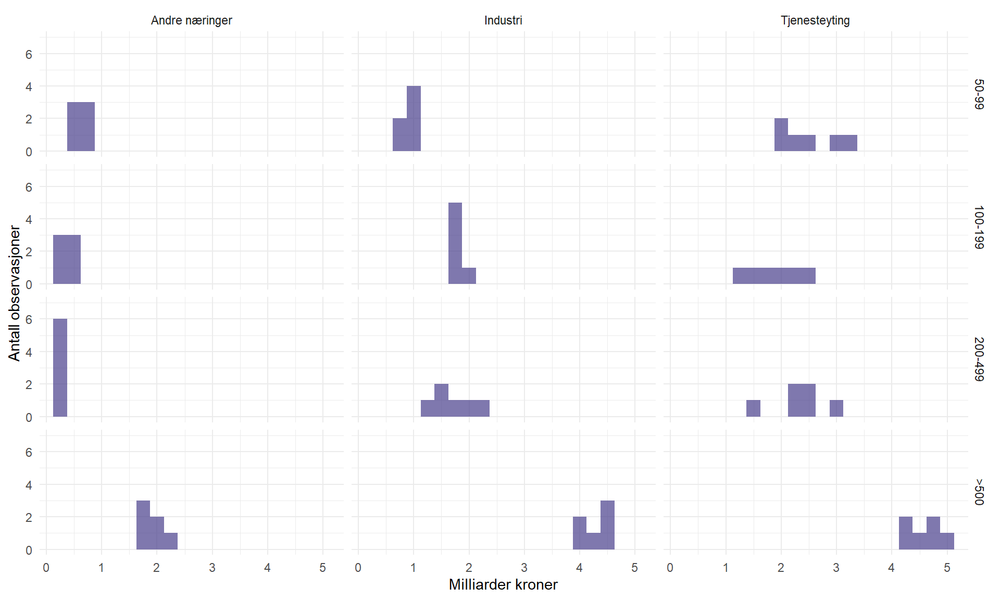
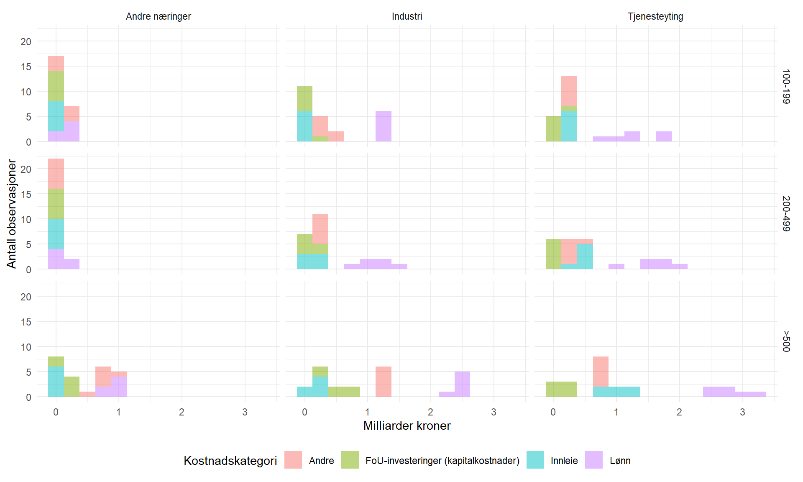

Code
# output | false
rm(list=ls())
library(tidyverse)
library(rjstat)
library(gdata)
library(httr)For å gå tilbake til hovedsiden trykker du her.
Denne oppgaven skal løses interaktivt i RStudio ved å legge inn egen kode og kommentarer. Det ferdige dokumentet lagres med kandidatnummeret som navn [kandidatnummer]_SOK1004_C4_H22.qmd og lastes opp på deres GitHub-side. Hvis du har kandidatnummer 43, så vil filen hete 43_SOK1004_C4_H22.qmd. Påse at koden kjører og at dere kan eksportere besvarelsen til pdf. Lever så lenken til GitHub-repositoriumet i Canvas.
Innovasjon er en kilde til økonomisk vekst. I denne oppgaven skal vi se undersøke hva som kjennetegner bedriftene som bruker ressurser på forskning og utvikling (FoU). Dere vil undersøke FoU-kostnader i bedriftene fordelt på næring, antall ansatte, og utgiftskategori. Gjennom arbeidet vil dere repetere på innhold fra tidligere oppgaver og øve på å presentere fordelinger av data med flere nivå av kategoriske egenskaper.
# output | false
rm(list=ls())
library(tidyverse)
library(rjstat)
library(gdata)
library(httr)Et histogram eller frekvensfordeling er en figur som viser hvor ofte forskjellige verdier oppstår i et datasett. Frekvensfordelinger spiller en grunnleggende rolle i statistisk teori og modeller. Det er avgjørende å forstå de godt. En kort innføring følger.
La oss se på et eksempel. I datasettet mtcars viser variabelen cyl antall sylindere i motorene til kjøretøyene i utvalget.
data(mtcars)
mtcars %>%
ggplot(aes(cyl)) +
geom_histogram() +
theme_minimal()
Verdiene av variabelen er er gitt ved den horisontale aksen, antall observasjoner på den vertikale aksen. Vi ser at det er 11, 7, og 14 biler med henholdsvis 4, 6, og 8 sylindere.
La oss betrakte et eksempel til. Variabelen mpg i mtcars måler gjennomsnittlig drivstoffforbruk i uanstendige engelske enheter. Variabelen er målt med ett desimal i presisjon.
data(mtcars)
mtcars %>%
ggplot(aes(mpg)) +
geom_histogram(binwidth=0.1) +
theme_minimal()
Datasettet inneholder mange unike verdier, hvilket gir utslag i et flatt histogram, noe som er lite informativt. Løsningen da er å gruppere verdier som ligger i nærheten av hverandre. Kommandoen Kommandoen binwidth i geom_histogram() bestemmer bredden av intervallene som blir slått sammen. Kan du forklare hvorfor alle unike verdier blir telt ved å å bruke binwidth = 0.1?
Eksperimenter med forskjellige verdier for binwidth og forklar hva som kjennetegner en god verdi.
data(mtcars)
mtcars %>%
ggplot(aes(mpg)) +
geom_histogram(binwidth=20) +
theme_minimal()
Alle unike verdier blir telt ved å bruke binwidth 0.1, og grafen blir mer leselig med observasjonene. Bruker man ikke binwidth eller en veldig høy verdi blir figuren veldig vanskelig å tyde slik som i figuren ovenfor.
Vi skal nå undersøkene dataene i Tabell 07967: Kostnader til egenutført FoU-aktivitet i næringslivet, etter næring (SN2007) og sysselsettingsgruppe (mill. kr) 2007 - 2020 SSB. Dere skal laster de ned ved hjelp av API. Se brukerveiledningen her.
Bruk en JSON-spørring til å laste ned alle statistikkvariable for alle år, næringer, og sysselsettingsgrupper med 10-19, 20-49, 50-99, 100-199, 200 - 499, og 500 eller flere ansatte. Lagre FoU-kostnader i milliarder kroner. Sørg for at alle variabler har riktig format, og gi de gjerne enklere navn og verdier der det passer.
Hint. Bruk lenken til SSB for å hente riktig JSON-spørring og tilpass koden fra case 3.
#
url <- "https://data.ssb.no/api/v0/no/table/07967/"
query <- '{
"query": [
{
"code": "NACE2007",
"selection": {
"filter": "item",
"values": [
"A-N",
"C",
"G-N",
"A-B_D-F"
]
}
},
{
"code": "SyssGrp",
"selection": {
"filter": "item",
"values": [
"10-19",
"20-49",
"50-99",
"100-199",
"200-499",
"500+"
]
}
}
],
"response": {
"format": "json-stat2"
}
}'
hent_indeks.tmp <- url %>%
POST(body = query, encode = "json")
df <- hent_indeks.tmp %>%
content("text") %>%
fromJSONstat() %>%
as_tibble()Vi begrenser analysen til bedrifter med minst 20 ansatte og tall fra 2015 - 2020. Lag en figur som illustrerer fordelingen av totale FoU-kostnader fordelt på type næring (industri, tjenesteyting, andre) og antall ansatte i bedriften (20-49, 50-99, 100-199, 200-499, 500 og over). Tidsdimensjonen er ikke vesentlig, så bruk gjerne histogram.
Merknad. Utfordringen med denne oppgaven er at fordelingene er betinget på verdien av to variable. Kommandoen facet_grid() kan være nyttig til å slå sammen flere figurer på en ryddig måte.
# Tatt fra Case 4 løsningsforslag
df <- df %>%
rename(næring = `næring (SN2007)`,
gruppe = sysselsettingsgruppe,
var = statistikkvariabel,
verdi = value)
# lagrer FoU i milliarder kroner
df <- df %>%
mutate(verdi = verdi/10^3)
# fjerner "sysselsatte" fra gruppevariabelen med str_replace
df <- df %>%
mutate(gruppe = str_replace(gruppe," sysselsatte","")) %>%
mutate(gruppe = str_replace(gruppe,"500 og over",">500")) %>%
mutate(var = str_replace(var,"Kostnader til innleid personale", "Innleie")) %>%
mutate(var = str_replace(var,"Andre driftskostnader", "Andre")) %>%
mutate(var = str_replace(var,"FoU-investeringskostnader", "Investering")) %>%
mutate(var = str_replace(var,"Lønnskostnader", "Lønn"))
# lagrer viktige verdier
gruppe_navn <- df$gruppe %>%
unique()
næring_navn <- df$næring %>%
unique()
var_navn <- df$var %>%
unique()# Kode tatt og modifisert litt fra løsnningsforslag til Case 4 av Even Hvinden.
df %>%
filter(næring %in% c("Industri", "Tjenesteyting", "Andre næringer")) %>%
filter(år %in% c(2015:2020)) %>%
filter(var %in% var_navn[1]) %>%
filter(gruppe %in% c(gruppe_navn[3:7])) %>%
ggplot(aes(verdi)) +
geom_histogram(binwidth=0.25, fill = "darkslateblue", alpha = 0.7) +
ylim(0,7) +
facet_grid(factor(gruppe, levels = c("20-49", "50-99", "100-199", "200-499", ">500")) ~ næring) +
labs(x= "Milliarder kroner", y = "Antall observasjoner") +
theme_minimal() 
Kan du modifisere koden fra oppgave II til å i tillegg illustrere fordelingen av FoU-bruken på lønn, innleie av personale, investering, og andre kostnader?
Merknad. Kommandoen fill = [statistikkvariabel] kan brukes i et histogram.
# Kode tatt og modifisert litt fra løsningsforslag til Case 4 av Even Hvinden.
df %>%
filter(næring %in% c(næring_navn[2:4])) %>%
filter(år %in% c(2015:2020)) %>%
filter(var %in% c(var_navn[3:6])) %>%
filter(gruppe %in% c(gruppe_navn[4:7])) %>%
ggplot(aes(verdi, fill = var))+
geom_histogram(binwidth = 0.25, alpha = 0.5)+
facet_grid(factor(gruppe, levels = c("20-49", "50-99", "100-199", "200-499", ">500")) ~ næring)+
labs(x= "Milliarder kroner", y =
"Antall observasjoner", fill = "Kostnadskategori")+
theme_minimal()+
theme(legend.position = "bottom")
For å gå tilbake til hovedsiden trykker du her.